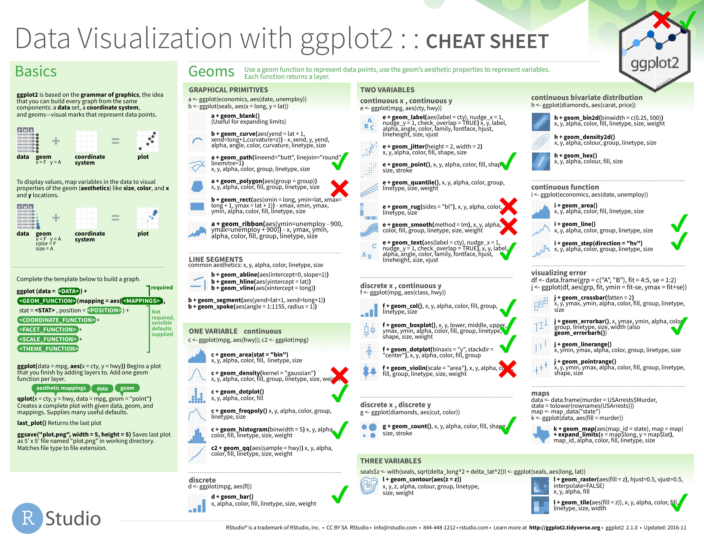
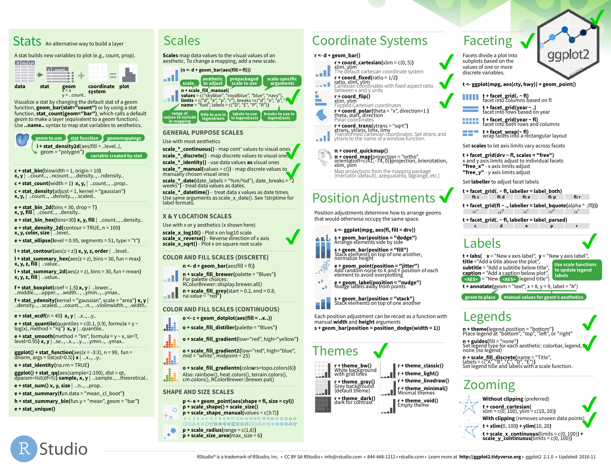

kravis - A {k}otlin {gra}mmar for data {vis}ualization
Visualizing tabular and relational data is the core of data-science. kravis implements a grammar to create a wide range of plots using a standardized set of verbs.
The grammar implemented by kravis is inspired from ggplot2. In fact, all it provides is a more typesafe wrapper around it. Internally, ggplot2 is used as rendering engine. The API of kravis is highly similar to allow even reusing their excellent cheatsheet.
R is required to use ggplot. However, kravis works with various integration backend ranging such as docker or remote webservices.
kravis- A {k}otlin {gra}mmar for data {vis}ualization- Jupyter
- Setup
- First Example
- The Grammar of Graphics
- Module Architecture
- Supported Data Input Formats
- Output Devices
- Rendering
- Plot Immutability
- API Coverage
- References
- Acknowledgements
This is an experimental API and is subject to breaking changes until a first major release
Jupyter
An easy way to get started with kravis is with jupyter, you simply need to install the kotlin-jupyter kernel.
See here for a notebook example.
Setup
Add the following artifact to your gradle.build
You can also use JitPack with Maven or Gradle to build the latest snapshot as a dependency in your project.
To build and install it into your local maven cache, simply clone the repo and run
First Example
Let's start by analyzing mamalian sleep patterns

Find more examples in our gallery {comding soon}.
The Grammar of Graphics
ggplot2 and thus kravis implement a grammar for graphics to build plots with
aesthetics+layers+coordinates system+transformations+facets
Which reads as map variables from data space to visual space + add one or more layers + configure the coordinates system + optionally apply statistical transformations + optionally add facets. That's the way!
Module Architecture

Supported Data Input Formats
Iterators
Every Iterable<T> is a valid data source for kravis, which allows to create plots using a type-save builder DSL. Essentially we first digest it into a table and use it as data source for visualization. Here's an example:

In the previous example we have used property references. kravis also supports an extractor lambda function syntax, which allow for on-the-fly data transformations when deparsing an Iterable<T>. The (not yet solved) disadvantage is that we need to assign axis labels manually

And here's another example using a custom data class:

Tables
kravis can handle any kind of tabular data via data-frames

Output Devices
kravis auto-detects the environment, and will try to guess the most reasonable output device to show your plots. The following output devices are available.
- A swing graphics device for rendering when running in interactive mode.
- A javaFX graphics device for rendering when running in interactive mode.
- It can render directly into files
- will render directly into jupyter notebooks.
By default kravis will render as png on all devices, but it also supports vector rendering using svg as output format.
The preferred output can be configured using the SessionPrefs object
Rendering
Currently kravis provided 3 different options to bind an R engine which is required to render plots.
(1) Local R
This is the default mode which can be configured by using
(2) Dockerized R.
This will pull and use by default the container rocker/tidyverse:3.5.1, but can be configured to use more custom images as needed.
(3) Rserve
An (optionally) remote backend based using Rserve
Simply install the corresponding R package and start the daemon with
For configuration details see https://www.rforge.net/Rserve/doc.html
Alternatively, in case you don't have or want a local R installation, you can also run it dockerized locally or remotly with
To use the Rserve backend, configure the kravis SessionPrefs accordingly by pointing to the correct host and port.
Plot Immutability
Plots are -- similar to dataframe data-frames -- immutable.
API Coverage
Currently we just map a subset of the ggplot2 API.
 
- Checks - implemented already
- Crosses - Planned but not yet done
Feel welcome to submit a ticket or PR if some important usecase is missing.
How to use missing API elements from ggplot2?
Since kravis just mimics some parts of ggplot2, and because user may want to create more custom plots we do support preambles (e.g. to define new geoms) and custom layer specs.
Example

How to run tests on your local machine
Run the following commands.
1 2 | |
References
You don't like it? Here are some other projects which may better suit your purpose. Before you leave, consider dropping us a ticket with some comments about whats missing, badly designed or simply broken in kravis.
GGplot Wrappers
- gg4clj Another ggplot2 wrapper written in java
Other JVM visualization libraries ordered by -- personally biased -- usefullness
- SmilePlot provides data visualization tools such as plots and maps for researchers to understand information more easily and quickly.
- XChart is a light-weight Java library for plotting data
- data2viz is a multi platform data visualization library with comprehensive DSL
- Kubed is a Kotlin library for manipulating the JavaFX scenegraph based on data.
- TornadoFX provides some Kotlin wrappers around JavaFX
- plotly-scala which provides scala bindings for plotly.js and works within jupyter
- breeze-viz which is a Visualization library backed by Breeze and JFreeChart
- grafana is an open platform for beautiful analytics and monitoring
- Jzy3d is an open source java library that allows to easily draw 3d scientific data: surfaces, scatter plots, bar charts
Other * https://github.com/bloomberg/bqplot is a plotting library for IPython/Jupyter Notebooks
Vega-lite based * Vegas aims to be the missing MatPlotLib for Scala + Spark * altair provides declarative statistical visualization library for Python * vega-embed allows to publish Vega visualizations as embedded web components with interactive parameters. * hrbrmstr/vegalite provides R ggplot2 "bindings" for Vega-Lite
Acknowledgements
Thanks to vega-lite team for making this project possible.
Thanks to the ggplot2 team for providing the best data vis API to date.